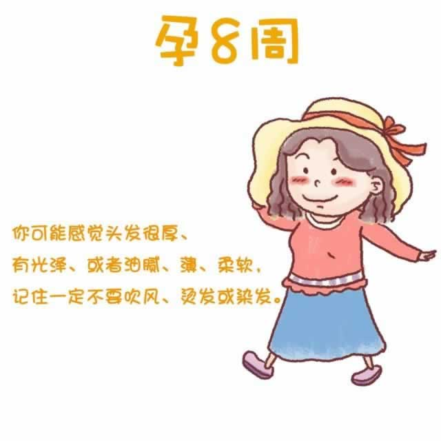

引起恶心孕吐的荷尔蒙数值达到了高峰，所以本周对于你来说十分难熬。为了防止因呕吐而引发脱水，请一定注意随时补充水分。如果呕吐的症状加剧，到了不能进食饮水的程度，则请尽快就医治疗。
肚脐周围的皮肤变得比平常要硬。因为体内雌激素的变化，你会察觉到自己的文胸在最近变得有些紧了。不妨去买个面料舒适，大些尺寸的吧，以便能更好地支撑逐渐膨胀的乳房。
除此之外，你会发现胃部的胀气感日趋明显，尤其是在饱餐之后。怀孕导致你体内的孕酮水平有所上升，而孕酮会使得胃肠道等平滑肌肉组织放松，从而延缓了消化速度。于是放屁、打嗝、胃部胀气等不适症状随之而来。少吃多餐，细嚼慢咽会有助于减少胀气的发生。